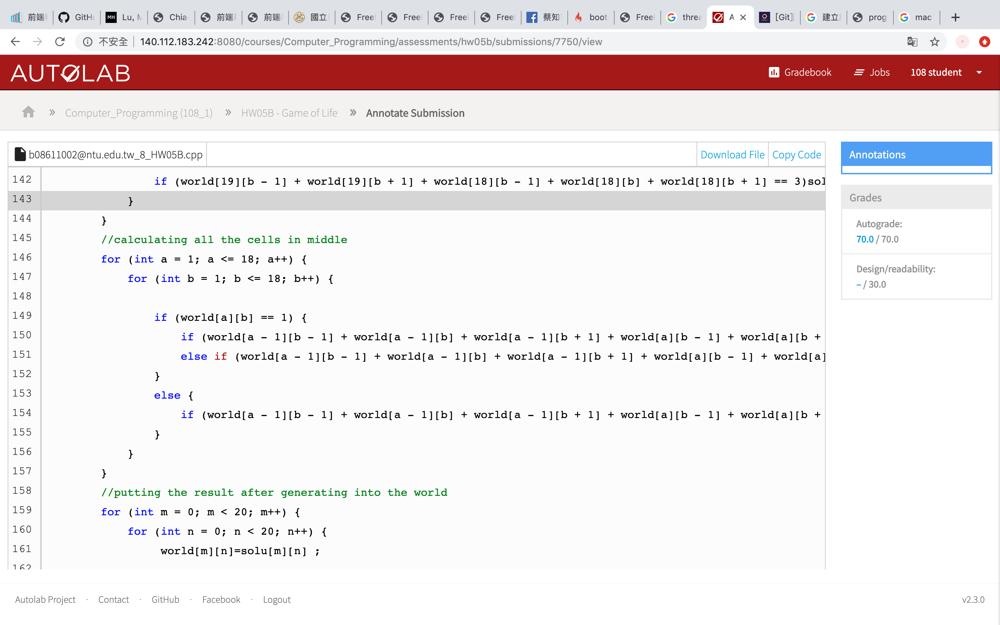
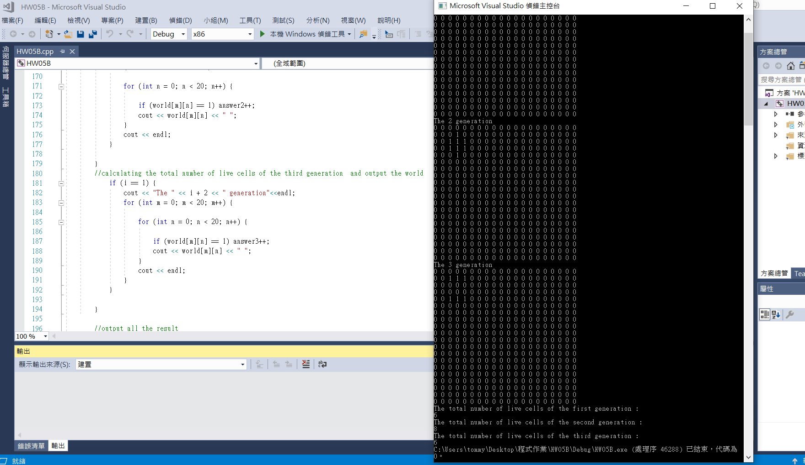

The universe of the Game of Life is a two-dimensional orthogonal grid of square cells, each of which is in one of two possible states, alive or dead. Every cell interacts with its eight neighbors, the immediately adjacent cells in orthogonal and diagonal direction. Cells on the border have less than eight neighbors. At each generation, the following transitions occur:
1. Any live cell with fewer than two live neighbors dies, as if by loneliness.
2. Any live cell with more than three live neighbors dies, as if by overcrowding.
3. Any live cell with two or three live neighbors lives, unchanged, to the next generation.
4. Any dead cell with exactly three live neighbors comes to life.
Your task is to write a program to simulate the Game of Life for a 20x20 world. The 20x20 world needs to be initialized by reading in which cells are occupied from the user. Your program will generate and display the next generation iteratively based on the set of rules described above. The number of generation for the simulation is also input by the user.
result:
